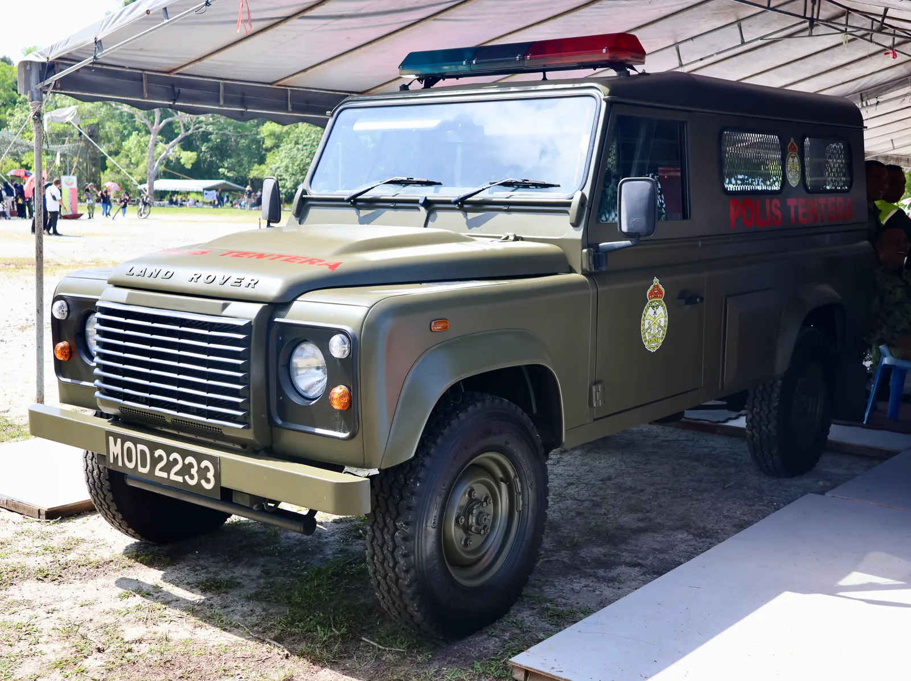
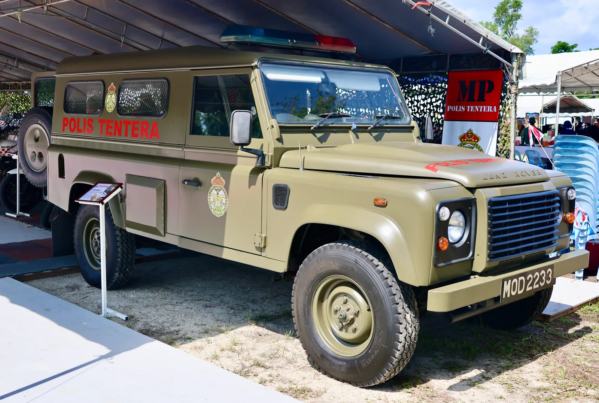

▲ 1990년대 도입된 랜드로버 울프 군용 사양. 새 제안 모델은 이 이름을 다시 쓴다 ⓒ Chin Yu Chu, Wikimedia Commons (CC BY-SA 2.0)
영국 국방부가 노후화된 경량 기동차량을 교체하는 사업을 추진 중이다. 규모는 9,500대 이상. 랜드로버는 여기에 '디펜더 울프 시리즈II'를 들고 나왔다. 1990년대 영국군이 쓰던 군용 랜드로버의 이름 '울프'를 다시 꺼낸 것이다.
1. 한 차대에서 9가지 — 요구 조건이 까다롭다

▲ 랜드로버 울프 군용 사양. 한 차대에서 여러 파생형을 만들어내는 것이 이 사업의 핵심 요구다 ⓒ Chin Yu Chu, Wikimedia Commons (CC BY-SA 2.0)
영국군이 요구한 파생형은 아홉 가지다. 범용차량, 야전 구급차, 전술 이동차량, 유틸리티차량, 강화 방호차량, 지휘통제차량, 장비 지원차량, 수송차량, 임무 시스템 차량이다. 하나의 기본 차대에서 구급차와 지휘차, 방호차를 모두 만들어내야 한다는 뜻으로, 플랫폼의 확장성이 평가의 핵심이 된다.
2. 무엇이 달라졌나

▲ 민수용 랜드로버 디펜더. 울프 시리즈II는 이 차를 기반으로 군용 요구에 맞춰 개발됐다 ⓒ CarPrism
랜드로버는 이 차를 '차세대 경량 기동차량'으로 소개하며 6만 2,000회에 이르는 테스트를 거쳤다고 밝혔다. 극한 환경에서의 내구성을 확보하는 데 초점이 맞춰졌다. 외관에서 확인되는 변화는 강철 범퍼, 헤드라이트 가드, 상승형 공기 흡입구(스노클), 대형 타이어, 루프 랙 등이다. 다만 엔진과 동력전달계의 구체적인 사양은 공개되지 않았다.
3. '울프'라는 이름이 갖는 의미
울프는 1990년대 영국군이 도입한 군용 랜드로버 디펜더의 제식 명칭이다. 이후 수십 년간 영국군의 기본 기동 수단으로 쓰였고, 이번 사업의 교체 대상에도 그 계보의 차량들이 포함된다. 같은 이름을 다시 쓴다는 것은 기존 운용 경험과 정비 체계를 이어받겠다는 신호이기도 하다.
네 가지 파생형은 이달 열리는 영국군 DVD 행사에서 공개될 예정이다.
4. 정리

▲ 랜드로버 디펜더(참고 이미지). 민수 모델의 구조를 군용 요구에 맞춰 확장하는 방식이다 ⓒ CarPrism
체크포인트
- 영국군 경량 기동차량 사업 규모는 9,500대 이상, 파생형은 9가지다.
- 랜드로버는 디펜더 울프 시리즈II로 6만 2,000회 테스트를 마쳤다고 밝혔다.
- 엔진·동력전달계 구체 사양은 미공개 상태다.
- 네 가지 파생형이 이달 DVD 행사에서 공개된다.